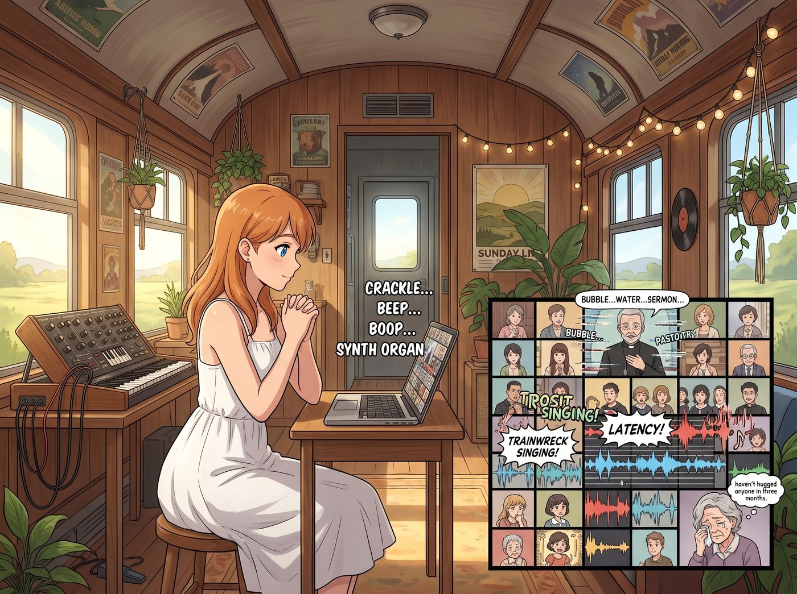

術語轉譯

二號車廂的星期日上午，被一陣斷斷續續、充滿雜音的電子合成管風琴聲填滿。
Kate 坐在筆記本電腦前，穿著她最喜歡的那件白色連衣裙，雙手交握在胸前。螢幕上是切分成幾十個小方塊的視訊會議室，裡面全是小鎮教堂的教區居民。網路延遲讓牧師的講道聽起來像是在水底吐泡泡，而唱詩班的合唱更是因為每個人的網速不同，變成了一場災難級的音軌車禍。
一個名叫 Martha 的七十歲老奶奶在螢幕那個小小的方塊裡偷偷抹眼淚。她已經三個月沒有擁抱過任何人了。
一、賽博精神折磨
坐在沙發上戴著降噪耳機打遊戲的 Chloe 終於忍無可忍，摘下耳機長嘆了一口氣：「Kate，我發誓我尊重妳的信仰，但這根本不是做禮拜，這是一場賽博精神折磨。那個叫 Martha 的老太太連麥克風都沒開，她對著鏡頭哭了二十分鐘，沒人能給她遞一張衛生紙。」
Kate 沮喪地合上了電腦，眼眶也紅了。
「我知道，Chloe，這太令人心碎了。」Kate 的聲音帶著濃濃的無力感，「Martha 的丈夫上個月剛過世，不是因為病毒，是心臟病。她沒有孩子，教會是她唯一的精神支柱。州長的居家令規定宗教聚會不得超過五個人，教堂大門被貼了封條。大家為了防疫都很努力，但我真的覺得……比起病毒，孤獨和絕望會先一步殺死這些老人。」
Max 走過去，輕輕拍了拍 Kate 的肩膀。作為一個看重情感連結的千禧世代，她能感受到那種被物理隔離切斷的痛苦，但在嚴厲的公共衛生法規面前，她們什麼也做不了。
二、基金會的立項書
這時，Lily 端著一杯剛泡好的伯爵茶，從她的多螢幕工作站後走了出來，身後跟著正在講電話的 Victoria。
「等等，我這邊先掛了，妳說的那個場地租金我會處理。」Victoria 掛斷電話，用手扶了扶額角，「Lily 剛才跟我提了 Kate 的情況，我已經把基金會這季度的預算撥出一部分，去墊付倉庫的場地租金和保險。」
「Kate 學姐，」Lily 推了推圓框眼鏡，眼神平靜地看向那個眼眶通紅的女孩，「如果我沒記錯的話，您在 Blackwell 學院期間，曾選修過三個學分的基礎心理諮商與危機干預，對嗎？」
Kate 愣了一下，擦了擦眼角：「是的……因為那件事之後，我想學習如何幫助其他陷入絕望的人。但這和現在有什麼關係？」
Lily 沒有回答，而是轉身從印表機裡抽出一份還帶著熱氣的文件夾，走到露營桌前攤開。
「州政府的防疫行政令確實非常嚴格。」Lily 的手指在密密麻麻的法條上輕輕滑動，聲音軟糯得像是在朗讀童話，「所有室內宗教集會、禮拜與神學討論，參與人數嚴格限制在五人以下。違者將面臨最高一萬美元的罰款。這是一道為了公共衛生而設立的鐵幕。」
Chloe 冷笑了一聲：「所以呢？妳打算讓上帝給我們發個行政豁免權？」
「上帝不歸我管，Chloe 學姐。但我歸聯邦法規管。」Lily 將文件夾推到 Kate 面前，上面蓋著 Victoria 那個非營利基金會的印章，以及一排密密麻麻的政府機構代碼。
「這是一份基於聯邦重大災難心理復原相關法規的必要性行為健康支持立項書。」Lily 甜美地微笑道，「行政令封死了宗教，但它對另一件事是絕對豁免的——心理互助與創傷干預小組，在保持六英尺社交距離和通風良好的前提下，人數上限是五十人。」
三、術語轉譯
Kate 睜大了眼睛，似乎還沒完全理解這意味著什麼。
Lily 拿起一支螢光筆，在文件上的幾個關鍵字上畫了線：「從今天下午開始，您不再是主持查經班的信徒，Kate 學姐。您是 Victoria Chase 基金會全資贊助的『奧林匹亞半島邊緣群體疫期悲傷輔導與藝術心理干預小組』的首席引導師。」
「Martha 奶奶和其他老人，不再是來做禮拜的教友。他們是持有社區醫生開具的高危孤獨症候群證明的受干預對象。你們頌唱的讚美詩，在報表上叫做集體聲帶共振與情緒釋放療法；你們閱讀的聖經，被歸類為具有歷史隱喻性質的敘事心理學讀物；而你們分享的聖餐餅和無酒精葡萄酒……」
Lily 頓了頓，露出一個純潔無暇的表情：「那是我們申請到的極端隔離環境下的生存熱量補給與腸胃安撫測試劑。」
「而場地跟保險的部分，」Victoria 在一旁補充道，語氣裡少見地帶著一絲認真，「我已經用基金會的名義租下了那個廢棄倉庫，走的是社區公益設施的稅務減免名目。萬一有人來查，帳目上完全站得住腳。」
車廂裡陷入了長達十秒的死寂。
「這……這是在欺騙政府嗎？」Kate 握著那份文件，手微微發抖，她那虔誠的世俗宗教觀讓她對這種明目張膽的偷換概念感到一絲本能的抗拒。
「這叫術語轉譯，Kate 學姐。」Lily 輕柔地握住 Kate 的手，眼神中透著一種不可動搖的理智與慈悲，「病毒不懂得區分教堂和心理診所，只要我們遵守物理層面的通風和社交距離，感染風險在科學上就是一致的。我們沒有破壞防疫的物理底線，我們只是給善良換了一件行政系統能夠識別的外衣。您難道不想親手給 Martha 奶奶遞一張衛生紙嗎？」
這句話徹底擊潰了 Kate 最後的猶豫。她咬著嘴唇，用力點了點頭。
四、警車的突襲
當天下午，二號車廂外那個廢棄的半敞篷木材倉庫被徹底改造了。
Chloe 戴著口罩，罵罵咧咧地用捲尺在地上精準地測量著六英尺的距離，擺放著一把把摺疊椅。她一邊擺一邊對 Max 抱怨：「我這輩子都沒想過，我會為了幫一群老頭老太太搞非法地下教會而當苦力。這簡直比去西雅圖砸警車還要龐克。」
兩點鐘的時候，十幾個戴著口罩、步履蹣跚的老人來到了營地。沒有管風琴，沒有彩色玻璃，只有荒野裡的風聲和幾盞臨時拉起來的工業探照燈。
但當 Kate 穿著那件白裙子，站在距離人群六英尺外的木箱上，翻開那本邊緣磨損的聖經時，Martha 奶奶在口罩下發出了壓抑了三個月的、安心的泣音。
就在聚會進行到一半時，麻煩還是來了。
一輛亮著警燈的巡邏車碾過碎石路停在倉庫外。那個曾經被 Lily 唬住的大媽，這次帶著一個郡治安官，氣勢洶洶地指著倉庫大喊：「就是這裡！警官！他們在搞非法的邪教聚會！這群散播病毒的瘋子！」
治安官按著腰間的配槍，皺著眉頭大步走進倉庫：「所有人站在原地！這次聚會嚴重違反了州長的居家令，負責人是誰？」
Chloe 下意識地抓起了一把扳手，Max 緊張地舉起了相機。而 Kate 則白著臉，下意識地想把聖經藏到身後。
但一隻蒼白的小手按住了 Kate 的手腕。
五、律師團的威嚇
Lily 撐著那把黑傘，從陰影中走了出來，身邊跟著快步趕來的 Victoria。她將那份夾著政府鋼印、基金會免責聲明的厚重文件夾，直接拍在了治安官的胸口上。
「下午好，警官。」Lily 的聲音在空曠的倉庫裡迴盪，帶著一種不容侵犯的威嚴，「您現在打斷的，是受相關聯邦法規保護的一級心理危機干預現場。這裡的每一位老人都處於嚴重的疫期創傷後壓力症候群邊緣。」
「而且，」Victoria 補充道，語氣冷靜卻帶著壓迫感，「這個計畫是我名下基金會全額出資贊助的正式項目，我們的法務顧問團隡隨時可以出面。如果因為您的執法方式導致任何一位受干預對象出現急性心臟衰竭或自殘傾向，我不介意讓我們的律師好好跟郡政府解釋一下，什麼叫剝奪弱勢群體基本醫療救助權。」
治安官看著文件上那些正式的印章，又看了看那些坐在六英尺外、戴著口罩、瑟瑟發抖但眼神無辜的老人們。他的執法大腦瞬間宕機了。
「心理干預？」治安官結巴了一下，指著 Kate 手裡的書，「那……那為什麼她拿著聖經？」
「那是敘事治療法的道具，警官。」Lily 推了推圓框眼鏡，眼神純潔得像個天使，「在極端焦慮下，患者需要熟悉的文本來建立心理錨點。或者，您是想親自來為這些孤獨的老人朗讀聯邦防疫手冊來安撫他們嗎？」
治安官嚥了一口唾沫，觸電般地將文件夾還給 Lily，然後轉過頭，對著身後那個還在叫囂的大媽怒吼道：「女士，這是一個合法的醫療互助小組！妳這是在浪費警力資源！」
警車灰溜溜地開走了，留下那個大媽在冷風中懷疑人生。
六、可愛的謊言
倉庫裡再次恢復了寧靜。
Kate 走到 Martha 奶奶身邊，依然保持著法定的安全距離，用一根長長的、綁著夾子的木棍，將一包消毒過的獨立包裝紙巾遞了過去。老人接過紙巾，隔著口罩，露出了一個三個月來最溫暖的笑容。
看著這一幕，Chloe 靠在木柱上，默默地點燃了一根菸，看著身邊正在喝牛奶的 Lily。
「妳知道嗎，實習生。」Chloe 吐出一口煙圈，「以前我覺得，信仰這東西就是用來騙人的。但今天我發現，當妳用騙人的方式來保護信仰的時候……這見鬼的世界居然還有那麼一點可愛。」